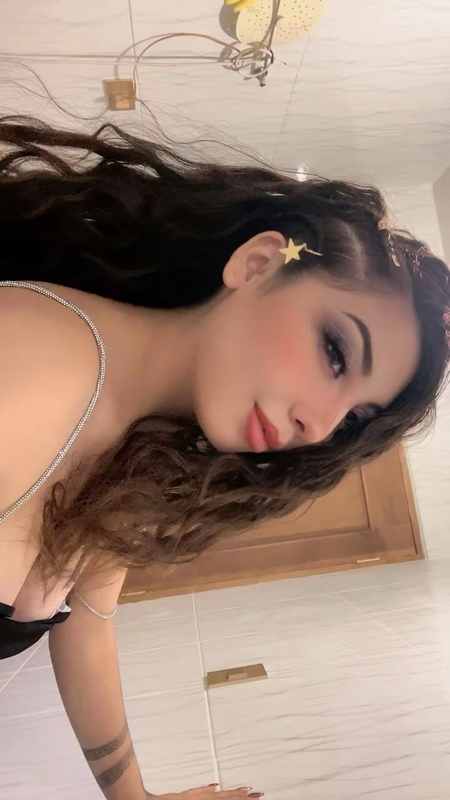

Camila...
He preparado algo especial para ti
Abrir mi sorpresaDesde niños.

Una leyenda japonesa...
Dice que dos personas destinadas a encontrarse están unidas por un hilo rojo invisible, atado a su dedo meñique.
Ese hilo puede estirarse, enredarse o perderse entre los caminos de la vida...
pero nunca se rompe.
Mi Camí:
Yo creo que nuestro hilo se ató hace muchísimos años, cuando apenas éramos unos niños de cinco o seis años y no sabíamos nada del amor. Tú ya estabas en mis días sin que yo entendiera por qué. Solo sabía que contigo todo era más bonito.
Crecimos. La vida nos llevó por caminos distintos, nos hizo cambiar, aprender y equivocarnos. Y aun así, el hilo siguió ahí, esperando paciente a que volviéramos a mirarnos.
Hoy entiendo que nunca fue casualidad. Cada año, cada recuerdo y cada vuelta del destino me estaban llevando de regreso a ti.
La distancia solo estira el hilo.
No lo rompe.
Hoy nos separan los kilómetros, pero no lo que siento. Te pienso al despertar, te busco en cada mensaje, sonrío como tonto cuando escucho tu voz y te llevo conmigo en todo lo que hago. No importa cuántas ciudades haya entre los dos: mi corazón ya sabe el camino hacia ti.
Gracias por tu paciencia, por tu risa, por tus buenos días y tus buenas noches. Gracias por quedarte, por creer en nosotros y por hacerme sentir en casa aunque estemos lejos. Contigo quiero ser mejor cada día.
Te prometo cuidar lo nuestro, escucharte siempre, hablarte bonito en los días difíciles y contar cada día que falte para volver a abrazarte. Y cuando por fin te tenga cerca, te prometo no soltarte.
Porque si algo tengo claro, amor, es que todos mis caminos terminan en el mismo lugar.
Me alegra tanto que mi hilo rojo me haya llevado hasta
Y esto es para ti, mi amor...
Dale play con el sonido activado